CHEM ATLAS · 用户操作与功能说明
文档鉴别材料 · 真实运行界面与操作流程
编制日期：2026-11-10
运行方式：本地浏览器 / Python 服务 / SQLite 索引
软件名称与版本为本项目当前标识，提交前请与申请表一致。
界面证据通过实际浏览器操作采集，原图和 SHA256 清单随文档保留。
本软件面向化合物数据整理与早期研究筛选，读取项目现有化合物、血脑屏障标签及 DrugBank 资料，将数据查询、分子结构计算、相似结构探索、可解释筛选和研究证据归档串联为一个本地工作流程。
| 功能模块 | 主要操作与输出 |
|---|---|
| 数据总览 | 统计三个数据来源、可解析结构、唯一结构并提供研究入口。 |
| 多源检索与详情 | 按来源、关键词和标签查询、分页、CSV 导出；展示来源行号、结构、计算性质与原始字段。 |
| 相似结构探索 | 输入或带入 SMILES，设置阈值，以 Morgan 指纹和 Tanimoto 系数计算相似结构。 |
| 可解释筛选 | 同时应用五项性质上限，列出命中依据，导出完整命中结果。 |
| 候选分子对比 | 最多三个候选并列展示结构和性质，支持移除与清空。 |
| 质量与溯源 | 展示非法、缺失、源内重复统计及来源文件 SHA256。 |
| 筛选记录 | 保存参数、命中标识、数据指纹及库版本，查看历史和导出 JSON。 |
软件不包含训练模型、活性预测或自动实验决策。activity 与 BBB 为原始来源标签。原有采集和片段脚本继续保留，但不属于本次工作台界面功能。
| 项目 | 本次实现与验证环境 |
|---|---|
| 操作系统 | Linux，本项目目录 /home/mytu/Project/personal/chemical_database |
| 解释器 | Python 3.12；建议独立虚拟环境 |
| 化学计算 | RDKit 2026.09.1 |
| 其他依赖 | openpyxl 读取 XLSX；SQLite 随 Python 提供；Playwright 用于截图和 PDF |
| 浏览器 | Google Chrome；页面无需远程脚本、字体或在线接口 |
./run.sh。可通过 CHEMDB_PYTHON 指定解释器。http://127.0.0.1:8765。仅监听本地回环地址，无登录步骤。端口占用时可执行 ./run.sh --port 8766，并访问相应地址。源数据变更时再次启动会重建对应索引；历史记录中的旧文件指纹仍保留。
| 数据文件 | 记录数 | 非法结构 | 缺失结构 | 源内重复 |
|---|---|---|---|---|
| Dataset/BBB_10648.csv | 10,648 | 2 | 0 | 1 |
| compound_info.csv | 2,424 | 0 | 0 | 0 |
| DrugBankAll.xlsx | 14,313 | 0 | 0 | 0 |
记录数按来源行统计，保留重复来源；唯一结构按 RDKit 规范化 SMILES 统计。DrugBank 不含 SMILES，未将其所有条目计入缺失结构。非法结构不参与计算筛选。MW 单位为 g/mol，TPSA 为 Ų，LogP 无量纲，HBD/HBA 分别为氢键供体/受体计数。
推荐连续流程：启动软件 → 核对总览 → 检索 tmy0 → 阅读结构与来源 → 将其带入相似探索 → 设置五项性质条件 → 执行并导出筛选 → 加入候选对比 → 保存筛选记录 → 核对来源指纹 → 下载证据 JSON。
DrugBank 使用独立资料阅读路径：选择该来源 → 按 ID 或原文关键词查询 → 查看药理资料字段。不存在结构时，结构计算与对比功能不对该记录启用。
下列操作章节配有全页面原始截图。截图文件以 2 倍像素密度保存，无重绘、拼接或结果替换。长页面采用完整页面截图，以保持功能区域完整。
总记录数应为 27,385，来源分别为 2,424、10,648 和 14,313 条。结构数以实际解析结果为准。
对应下一页完整界面截图：screenshots/01-overview.png
实际访问地址：http://127.0.0.1:8876/#overview
采集时间（UTC）：2026-11-10T05:51:05.745942+00:00
原始尺寸：2560 × 1728 像素
SHA256：dfc81a1b1fde0f45a1df56aa994cb49bd5869a834fb3c135839a707fa77e9906
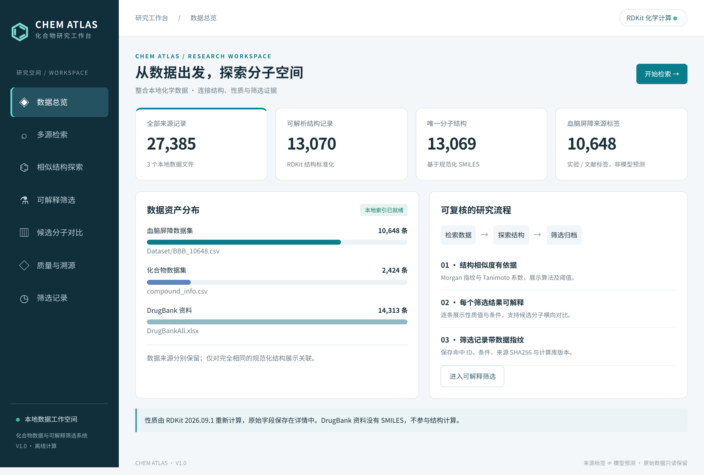
默认每页 8 条；表格显示计算性质，记录名称可进入详情。来源标签与预测结果严格区分。
对应下一页完整界面截图：screenshots/02-search.png
实际访问地址：http://127.0.0.1:8876/#explore
采集时间（UTC）：2026-11-10T05:51:06.254327+00:00
原始尺寸：2560 × 2084 像素
SHA256：f8ee398acd91269f00d5b1410f631f7393912dca6cea4f7973a6e0b53f9aab73
实际导出文件包含记录 ID、来源、原文件行号、SMILES、标准化结构、性质和来源标签。
对应下一页完整界面截图：screenshots/03-search-filtered.png
实际访问地址：http://127.0.0.1:8876/#explore
采集时间（UTC）：2026-11-10T05:51:06.906328+00:00
原始尺寸：2560 × 1700 像素
SHA256：ba1e82169cf23b78dd6bf7c7e488a7e97da78b79926bb950659d401efe62eea0
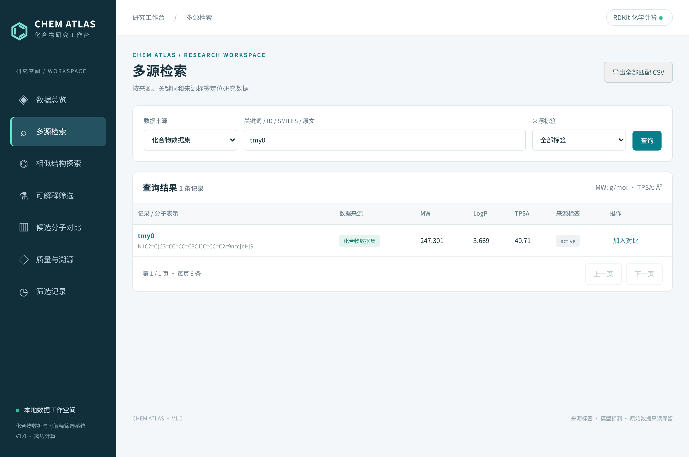
主表性质来自统一 RDKit 计算，原文件性质仍保留在详情中；并列呈现便于发现计算口径差异。
对应下一页完整界面截图：screenshots/04-detail.png
实际访问地址：http://127.0.0.1:8876/#detail/compound%3Atmy0
采集时间（UTC）：2026-11-10T05:51:07.325929+00:00
原始尺寸：2560 × 1996 像素
SHA256：cbcb1d6077efdc9354111a87a1caa419c282e7050815d5601e0b5553d7d3e891
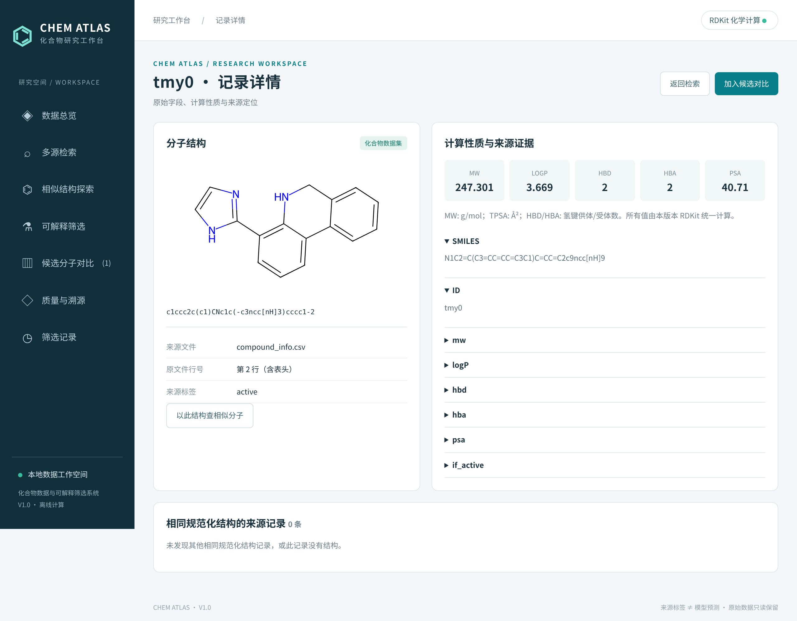
自身结构相似度为 1.000。接口最多返回前 60 条，页面先展示 6 条，其余可展开。相似度不代表药效。
对应下一页完整界面截图：screenshots/05-similarity.png
实际访问地址：http://127.0.0.1:8876/#similar
采集时间（UTC）：2026-11-10T05:51:07.801108+00:00
原始尺寸：2560 × 2430 像素
SHA256：85e121f642adfcf0a26beb01dec2e759d2b983306606a277d7dc9b4785c8a0ad
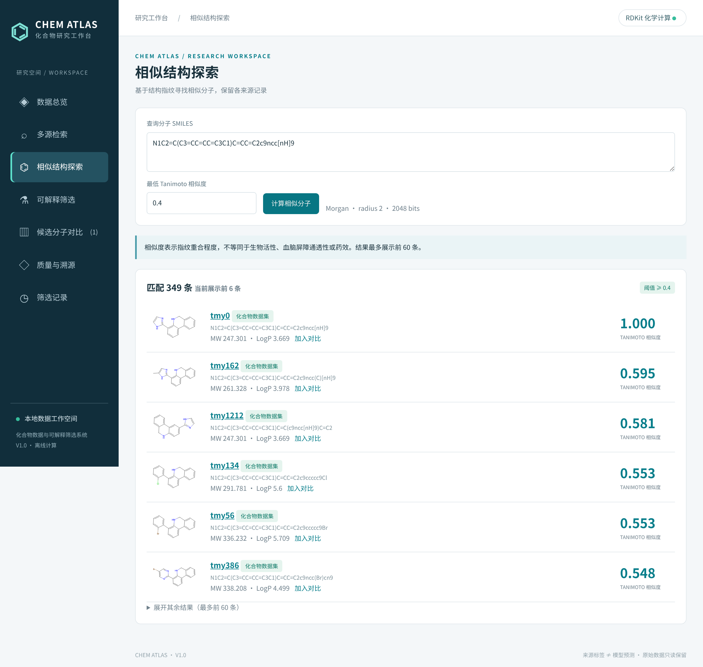
系统显示解析失败原因，保持输入表单，允许用户纠正后继续；不会展示伪造的分子结果。
对应下一页完整界面截图：screenshots/06-invalid.png
实际访问地址：http://127.0.0.1:8876/#similar
采集时间（UTC）：2026-11-10T05:51:08.164127+00:00
原始尺寸：2560 × 1700 像素
SHA256：a1a4f9dde749038ac4c1f6e044dd4a86f01377e3fbc319af9f98248478bc4e6f
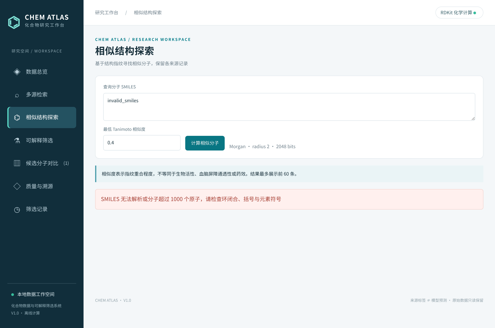
页面预览按 MW 升序的前 6 条命中；全部命中均可导出。默认条件可通过恢复默认条件按钮重置。
对应下一页完整界面截图：screenshots/07-screen.png
实际访问地址：http://127.0.0.1:8876/#screen
采集时间（UTC）：2026-11-10T05:51:08.629165+00:00
原始尺寸：2560 × 2436 像素
SHA256：83bd0f54c03123adfbdfb1febee168cabfc00cd605014a0c6979ff2f8f409d90
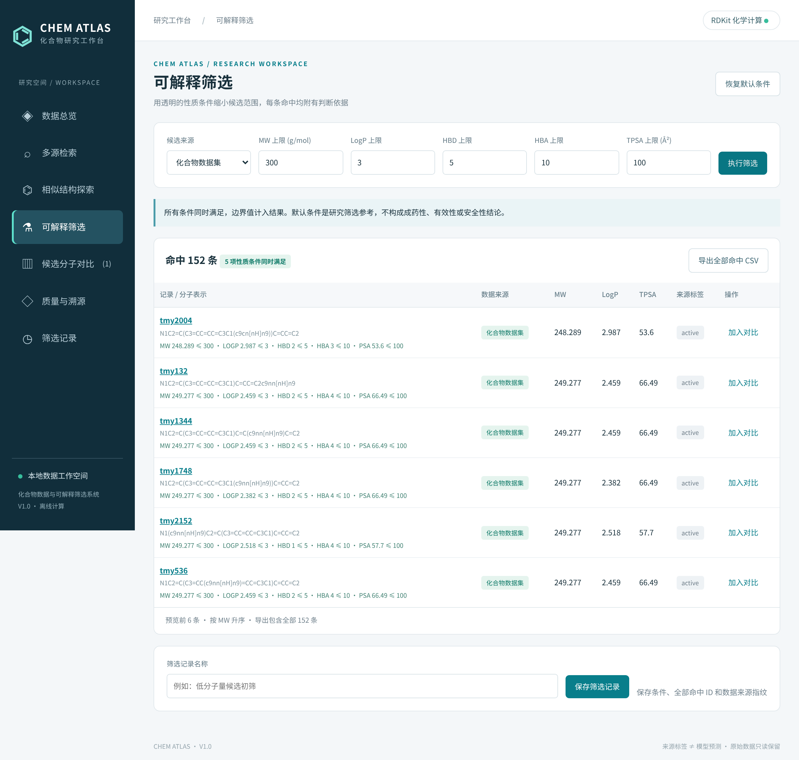
JSON 保留全部命中标识、前 100 条结果快照和来源指纹；名称及时间由实际操作产生。
对应下一页完整界面截图：screenshots/08-run-detail.png
实际访问地址：http://127.0.0.1:8876/#run/1
采集时间（UTC）：2026-11-10T05:51:09.342686+00:00
原始尺寸：2560 × 1742 像素
SHA256：ac93ebd310e0d842b98eef04259fb8fe0f69d17d92c2358fc32dfbb2053920f0
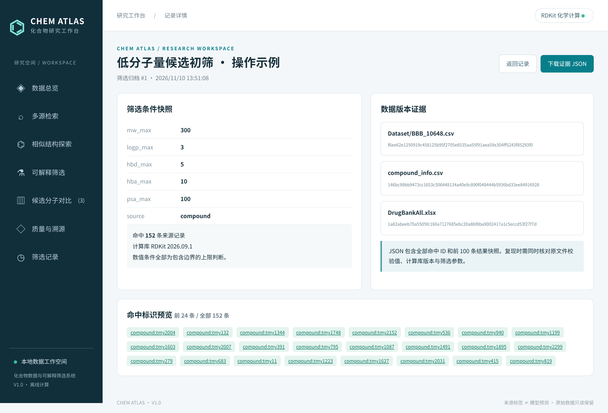
候选之间使用同一计算口径，原始标签只作来源信息，不据此给出跨实验效力排名。
对应下一页完整界面截图：screenshots/09-compare.png
实际访问地址：http://127.0.0.1:8876/#compare
采集时间（UTC）：2026-11-10T05:51:09.852998+00:00
原始尺寸：2560 × 1956 像素
SHA256：7e4e0db8a9f5aee605b95ca945044885b38752236b85c4cb23ea1b33110f5a9f
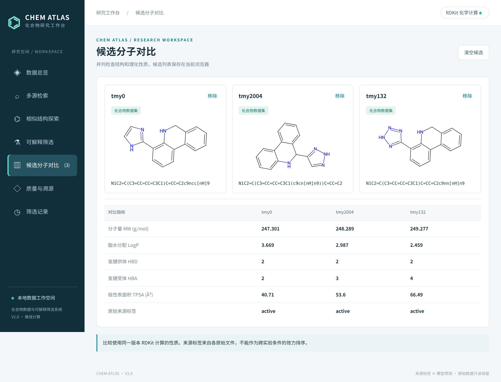
DrugBank 无 SMILES 是来源设计，不计入缺失结构。重复统计按源内规范化结构或无结构记录的 ID 进行。
对应下一页完整界面截图：screenshots/10-quality.png
实际访问地址：http://127.0.0.1:8876/#quality
采集时间（UTC）：2026-11-10T05:51:10.560192+00:00
原始尺寸：2560 × 1740 像素
SHA256：bd301c64de59d8c0be188739e7ba0d54ced13b6606fe23afe037890c58ff189b
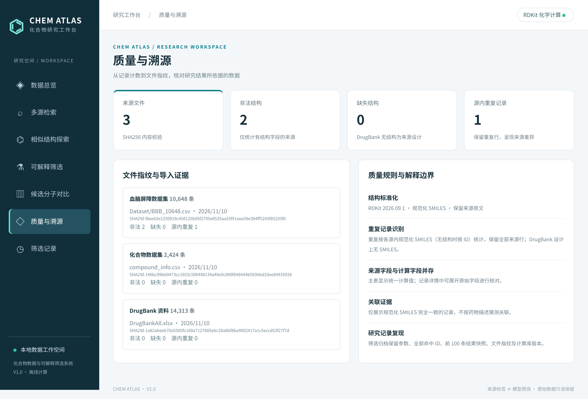
历史记录保存在 SQLite；网页刷新不会丢失。记录不可在界面覆盖，以保留每次筛选证据。
对应下一页完整界面截图：screenshots/11-history.png
实际访问地址：http://127.0.0.1:8876/#history
采集时间（UTC）：2026-11-10T05:51:10.814627+00:00
原始尺寸：2560 × 1700 像素
SHA256：2a209ec939a8a735aec4baa381e86ebabc46a351dc37d0420ed5df8a7b17ea82
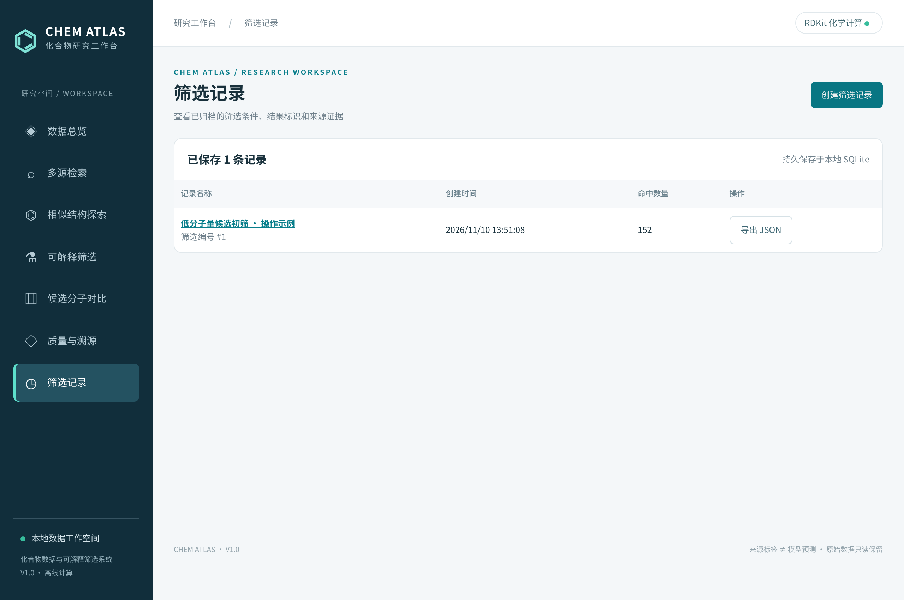
BBB 数值直接来自数据文件，本软件不将标签解释为新模型的预测输出。
对应下一页完整界面截图：screenshots/12-bbb.png
实际访问地址：http://127.0.0.1:8876/#explore
采集时间（UTC）：2026-11-10T05:51:11.266294+00:00
原始尺寸：2560 × 2084 像素
SHA256：76ed075d7185f97541c344a665a4be6a6b555daa6af4023f00983bd5dbad3f06
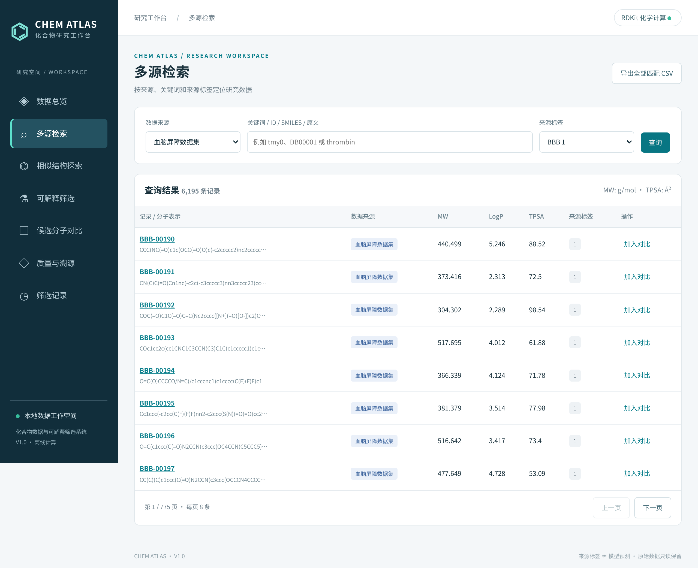
DrugBank 文件没有 SMILES，本版本只提供资料检索和原文字段查看。
对应下一页完整界面截图：screenshots/13-drugbank.png
实际访问地址：http://127.0.0.1:8876/#explore
采集时间（UTC）：2026-11-10T05:51:11.883013+00:00
原始尺寸：2560 × 1700 像素
SHA256：a91b9ffe9ca137434a6e7c0449854a04a4f1d230b0c1aa3a3c1e03dfe975503e
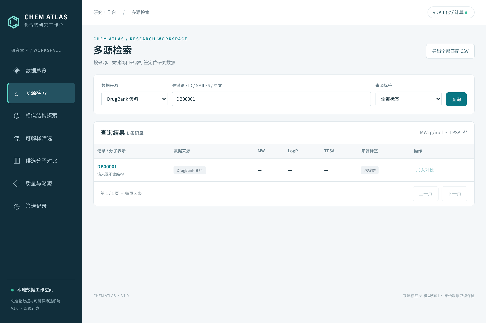
原文按字段呈现，保留来源内容；结构区域明确提示此记录无可计算结构。
对应下一页完整界面截图：screenshots/14-drugbank-detail.png
实际访问地址：http://127.0.0.1:8876/#detail/drugbank%3ADB00001
采集时间（UTC）：2026-11-10T05:51:12.228041+00:00
原始尺寸：2560 × 2332 像素
SHA256：861488c4030130d63f570226936c4cbd98a36295e039b2f531fdd6454b0c6f55
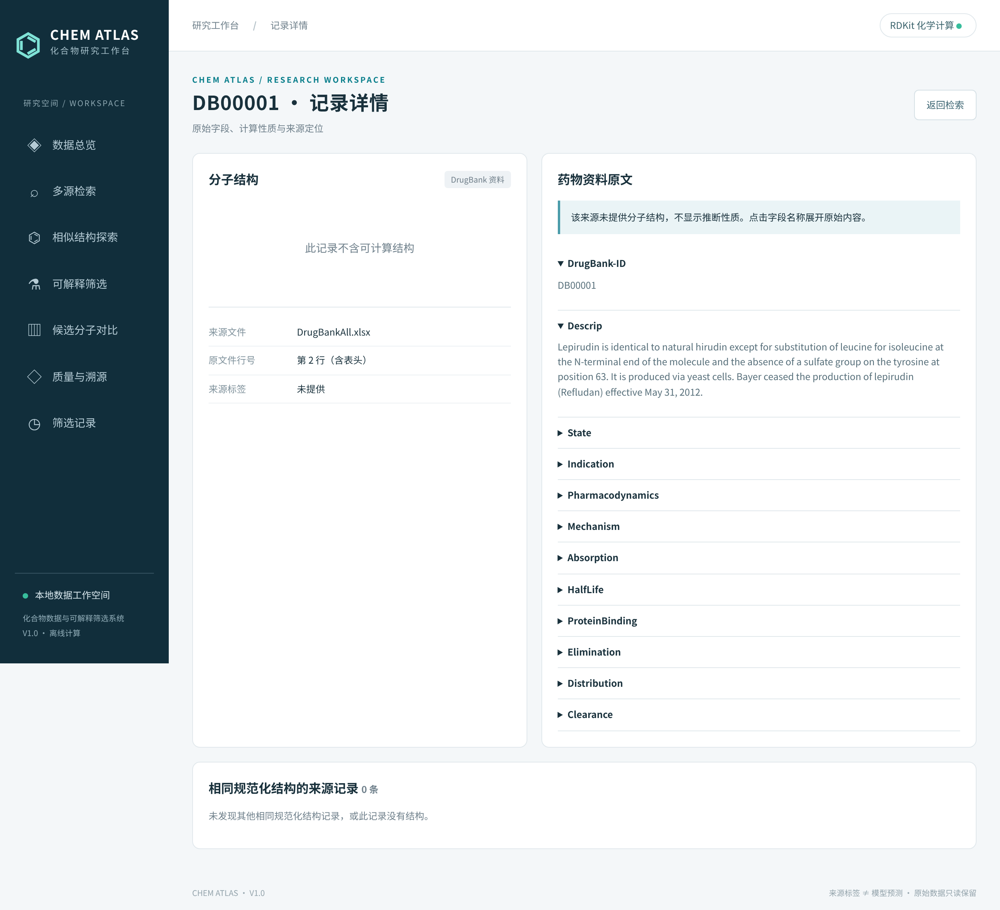
空结果属于正常查询状态，系统保留表单供用户继续操作。
对应下一页完整界面截图：screenshots/15-empty.png
实际访问地址：http://127.0.0.1:8876/#explore
采集时间（UTC）：2026-11-10T05:51:13.079171+00:00
原始尺寸：2560 × 1700 像素
SHA256：246ca4c6b40646db006d7490c74d052f1434294174cd266f574ffefd3aafd2d4
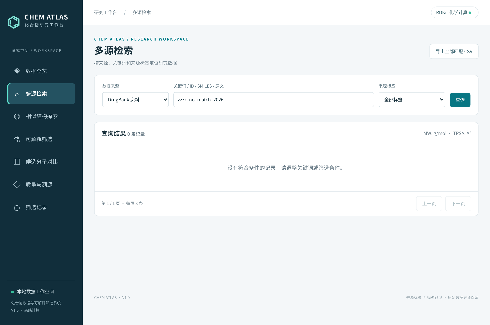
| 技术特点 | 实际实现及边界 |
|---|---|
| 多源字段保留与结构关联 | 独立保存来源、行号、原始字段和规范化 SMILES。仅结构完全相同时提供关联，不根据名称或描述猜测对应关系。 |
| 透明的相似结构探索 | Morgan 半径 2、2048 位指纹；Tanimoto 系数；保留来源行，按相似度降序，最多返回前 60 条。 |
| 可解释多条件筛选 | 统一计算 MW、LogP、HBD、HBA、TPSA，以包含边界的 AND 逻辑筛选；逐项展示数值与阈值。 |
| 筛选证据归档 | 服务端重新核验条件与命中 ID，保存全部 ID、前 100 条结果快照、来源文件 SHA256 和 RDKit 版本；支持 JSON 复核。 |
| 计算值与原值并存 | 主表使用统一计算口径，详情保留原始性质字段，便于追踪口径差异。 |
| 本地可复建索引 | SQLite 持久化；启动时校验来源文件内容指纹，未变更来源复用索引。 |
上述内容描述本软件实际技术实现与组合特点，不作原创算法或法律新颖性认定。第三方库及原始数据来源须按实际权属和许可另行核对。
| 统计类别 | 文件数 | 物理行数 | 非空行数 |
|---|---|---|---|
| 运行程序 | 6 | 579 | 542 |
| 验证与文档工具 | 6 | 541 | 502 |
| 既有离线脚本 | 8 | 332 | 265 |
物理行数按 UTF-8 文本 splitlines() 统计，包含注释及空行；非空行数只排除空白行，并不等同于可执行语句数。数据集、图片、PDF、缓存、第三方依赖和配置说明不计入运行程序。所有逐文件行数与 SHA256 保存在 source-inventory.json 中。
运行程序包括 chemdb.py、server.py、web/index.html、web/app.js、web/style.css 和 run.sh。验证和材料生成工具另列；旧采集与片段脚本并非本次界面入口，不与运行程序量混算。
以下核对项用于使材料与实际申请范围保持一致。
| 情况 | 处理步骤 |
|---|---|
| 服务未启动或页面打不开 | 检查终端启动信息、解释器依赖和端口；必须在允许本地套接字的环境运行。受限沙箱报 Operation not permitted 时，改在正常终端运行。 |
| 无查询结果 | 检查数据来源与标签是否一致，清空关键词后重新查询。DrugBank 按原文英文关键词匹配。 |
| SMILES 解析失败 | 检查结构字符串；可从已知记录详情直接带入。不得将普通名称当作 SMILES 输入。 |
| 筛选结果不符合预期 | 核对五个上限均需满足；检查来源选择及数值单位。更改条件后必须再次执行筛选，保存的是已执行结果。 |
| 候选数量达到上限 | 到候选对比移除现有条目，再加入其他分子。候选列表在当前浏览器 localStorage 中保存。 |
| 备份与迁移 | 停止服务后备份原始文件、源代码及 runtime/chemical.sqlite；浏览器候选列表与数据库筛选历史分别保存。历史归档也可单独导出 JSON。 |
| 重新制作材料 | 运行 generate_materials.sh，检查截图清单与 PDF；每次采集会新增一条示例筛选历史，不删除已有研究记录。 |